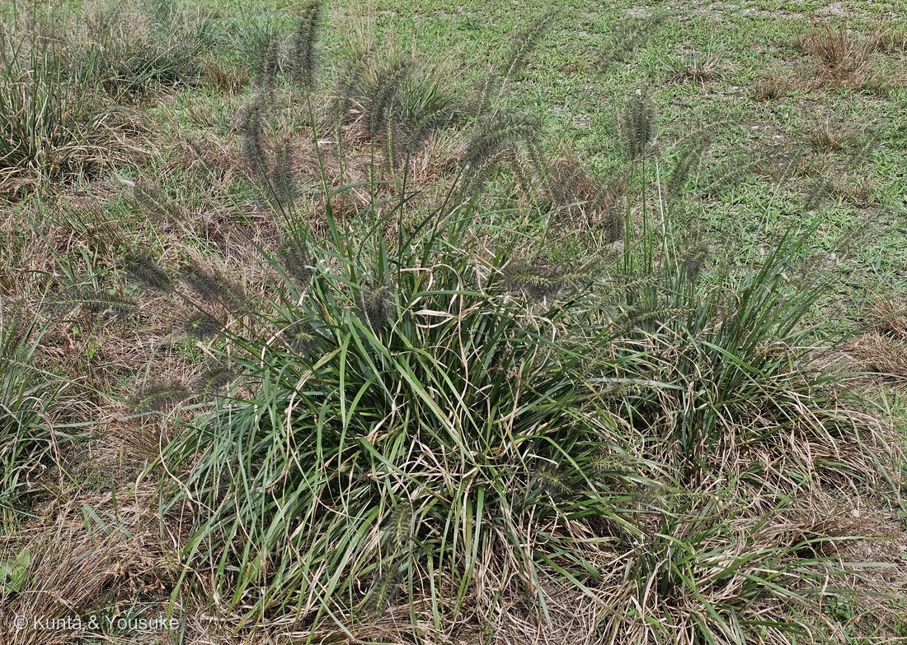
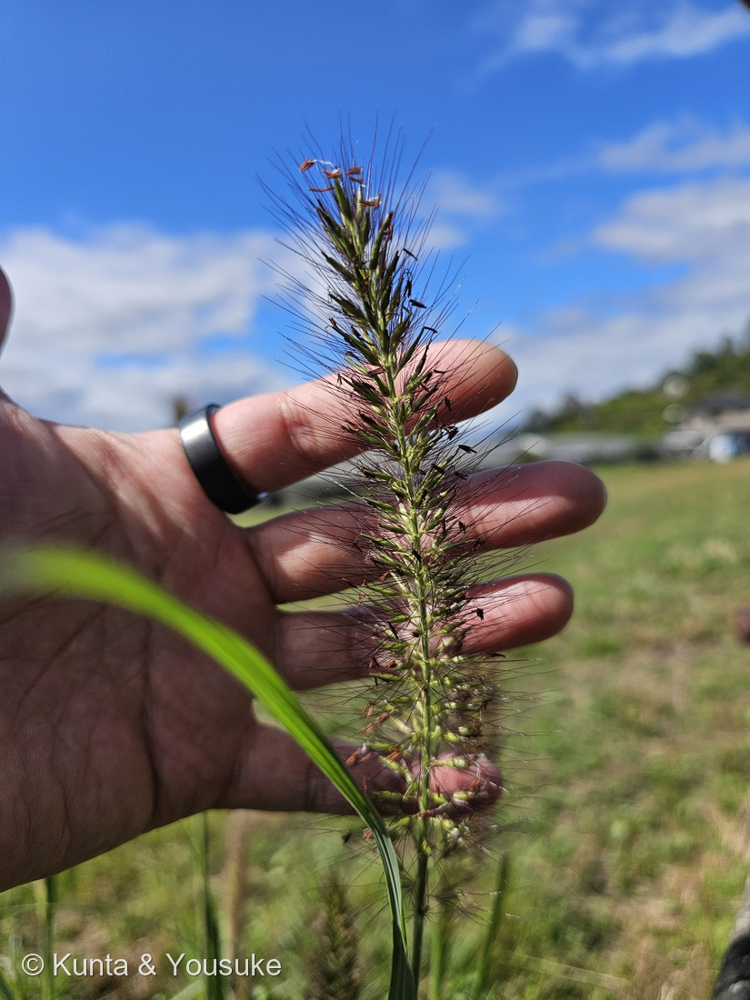
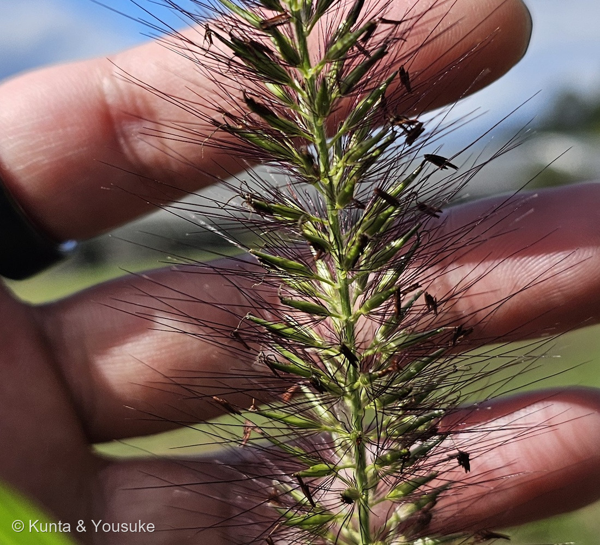

地図を読み込んでいるよ…
🔍 写真も地図も、押しているあいだ拡大して見られるよ（スマホは指を置いてすこし待ってね）。
🌍 の地図＝この子がもともと自生している場所を緑に。日本（北海道の西南部より南）・朝鮮・中国・台湾・フィリピン・東南アジア・インドからオーストラリアまでの在来種。日本では道ばたや草地にふつうに生える。くわしくは下の地図の説明を見てね。
⭐東アジアから南アジア、オーストラリアまでの在来種だよ＝三河の植物観察は「在来種 日本全土、朝鮮、中国、台湾、インド、インドネシア、マレーシア、ミャンマー、フィリピン、オーストラリア」とする。⚠日本語版Wikipediaは「北海道西南部以南」としているので、北海道ぜんぶが緑なのは広めだよ。⚠北アメリカなどに帰化しているぶん（日本語版Wikipedia）と、外国の庭に植えられた園芸品種のぶんは塗っていない。⭐世羅の花の駅の入り口付近の草地に、自然に生えていた株（⚠ぼくの読み）。
⚠ 地図は国（日本と中国だけ県・省）までしか塗れないから、ほんとうの分布より広く見えていることがあるよ。地図はだいたいの場所。正確なところは、上の文を見てね。
チカラシバ（力芝）
Cenchrus alopecuroides (L.) Thunb.（日本の図鑑では Pennisetum alopecuroides (L.) Spreng. の名で書かれることが多い）
別名 · ミチシバ／ウマツナギ／中国名 狼尾草（オオカミのしっぽ）／英名 Chinese fountaingrass・foxtail fountain grass
イネ科 · Poaceae（キビ亜科 Panicoideae · クリノイガ属 Cenchrus（もとチカラシバ属 Pennisetum） · イネ目 Poales）── ⭐022 エノコログサと同じキビ亜科／⭐144 オヒシバ・166 スズメガヤのなかまと同じイネ科
燻太さんの言葉「ブラシのような穂を持つイネ科植物だよ。茶色い細い糸と、茶色い葯が特徴的。」── ⭐「茶色い細い糸」＝総苞毛が、そのまま名前の決め手だった
⭐⭐⭐⭐ 名前と学名の由来 ── 「力いっぱい引いても抜けない」と「キツネのしっぽ」
- ⭐⭐⭐ 和名「チカラシバ（力芝）」＝「根が強く張り、力いっぱい引っ張ってもなかなか抜けないことから」（三河）。⭐別名「ウマツナギ」も、馬をつないでおけるほど丈夫、という意味の名前（日本語版Wikipedia）。
- ⭐⭐ 属名 Cenchrus＝ギリシャ語 kenchros（キビ、雑穀）から（Merriam-Webster）。
- ⭐⭐ もとの属名 Pennisetum＝ラテン語 penna（羽）＋ seta（剛毛）＝穂の毛を指している（英語版Wikipedia「Cenchrus」）。
- ⭐⭐⭐ 種小名 alopecuroides＝「スズメノテッポウ属（Alopecurus）に似た」。⭐Alopecurus はギリシャ語 alōpēx（キツネ）＋ oura（しっぽ）（SANBI）＝⭐つまり「キツネのしっぽのような」穂。
- ⭐⭐⭐ 中国名は「狼尾草」＝オオカミのしっぽ（三河）。⭐⭐となりの022 エノコログサの中国名は「狗尾草」＝イヌのしっぽ（三河）。⭐学名はキツネ、中国名はオオカミ、そしてとなりの子はイヌ。
⭐⭐⭐ この植物のこと ── 秋の道ばたのブラシ
- ⭐⭐ 日本じゅう（北海道の西南部より南）の道ばた・草地に生える多年草（日本語版Wikipedia・三河）。⭐花は8〜10月、高さ15〜40cm（三河）。
- ⭐⭐⭐ 穂のブラシの毛は「総苞毛（そうほうもう）」＝小穂の根もとに、長さ約2cmの黒紫色の毛のたば（三河）。⭐緑の小穂は長さ5〜8mmなので、毛のほうが2倍以上長い（三河の数字から）。
- ⭐⭐⭐ 熟すと、実（頴果）が総苞毛といっしょに落ちる（三河）。⭐その毛が動物の毛や服に引っかかって運ばれる「ひっつき虫」（日本語版Wikipedia）。
- ⭐⭐ 毛の色で品種がある＝淡緑色のアオチカラシバ、赤みがかったベニチカラシバ、毛が無いボウズチカラシバ（三河）。⭐この株は、いちばんふつうの黒紫。
- ⭐⭐ 外国では庭の草として人気＝英名 fountain grass（噴水の草）。⭐'Hameln' など、たくさんの園芸品種がある（三河）。⚠北アメリカなどでは帰化している（日本語版Wikipedia）。
- ⭐ 日本では道ばたの困った雑草あつかいでもある（日本語版Wikipedia）。
⚠ 同定について ── 小穂ごとの毛のたば、太いブラシ、大きな株
- ⭐⭐⭐⭐ チカラシバ Cenchrus alopecuroides とした。⭐決め手は3つ＝①小穂の1つ1つの根もとから、黒紫の長い毛がたばになって出る（写真②③）②穂は手のひらと同じくらいの長さの、太い円柱形のブラシ（写真②）③大きな株を作る多年草で、株もとに古い葉がたまり、茎は枝分かれしない（写真①）。
- ⭐⭐⭐ いちばん似ているのは022 エノコログサ。⭐でも三河の数字でくらべると、大きさがまるでちがう＝エノコログサは小穂が約2mm、剛毛は8〜12mm、穂の幅は約8mm／チカラシバは小穂が5〜8mm、毛は約2cm、穂の直径は約4cm。⭐それにエノコログサは1年草（三河）。
- ⚠⚠ 毛の色は決め手にしなかった＝エノコログサにも、剛毛が紫褐色の「ムラサキエノコロ」がいる（三河）。⭐反対に、チカラシバにも緑の毛のアオチカラシバがいる（三河）。
- ⭐ ほかに落とした相手＝エダウチチカラシバ（帰化種。茎が枝分かれし、内側の総苞毛が羽毛のように分かれる＝三河）。⭐この株は茎が枝分かれせず、写真③の毛はまっすぐ。
- ⭐⭐ 学名は出典で割れている＝POWO（GBIF・Wikispecies 経由）は Cenchrus alopecuroides (L.) Thunb.／三河・日本語版Wikipedia は Pennisetum alopecuroides (L.) Spreng.（三河もシノニムとして Cenchrus の名を並べている）。⭐2010年に、チカラシバ属（Pennisetum）をクリノイガ属（Cenchrus）にまとめる提案があり、POWO はそれに従っている（英語版Wikipedia「Cenchrus」＝2つの属を分けてきた「毛がくっつき合う程度」は、あてにならないことが多い）。⭐この図鑑では POWO の名前を使った。
- ⚠ アメリカの ITIS などは、さらに別の Cenchrus purpurascens Thunb. を使っている（GBIF はこれを C. alopecuroides のシノニムとしている）。⭐IPNI によると、どちらもツンベルクが1794年に発表した名前。⚠どうして出典によって選ぶ名前がちがうのか、ぼくには確かめきれなかった。
⭐⭐⭐⭐⭐ 燻太さんの「茶色い細い糸と、茶色い葯」── ブラシの正体
- ⭐ 燻太さんの言葉＝「ブラシのような穂を持つイネ科植物だよ。茶色い細い糸と、茶色い葯が特徴的。」
- ⭐⭐⭐⭐ 「茶色い細い糸」が、この子の名札そのもの＝総苞毛。⭐写真③を見ると、毛は穂の軸からばらばらに生えているのではなく、緑の小穂の1つ1つの根もとから、たばになって出ている＝⭐1つの小穂を、毛のたばがかごのように包んでいる。
- ⭐⭐⭐ だから、熟すと「小穂＋毛のたば」がひとまとめに落ちる（三河「頴果は総苞毛とともに落ちる」）＝⭐毛のたばが、そのままひっつき虫の「かぎ」になる。
- ⭐⭐ 「茶色い葯」は、ちょうど花が咲いているしるし＝⭐写真②の穂の上のほうでは、葯が小穂からぶらさがって風にゆれている。⭐穂の下のほうの、毛にひっかかった黒っぽい小さなものも、たぶん落ちかけた葯（⚠ぼくの読み）。
- ⭐⭐⭐ エノコログサの剛毛とは、毛のつきかたがちがう＝エノコログサの剛毛は、小穂が落ちたあとも枝に残る（三河）。⭐「毛ごと落ちるか、毛だけ残るか」＝⏳秋が深まって穂が熟したら、そっとなでて確かめてみようね。
⏳ 宿題 ── 3つ
- ⏳⭐⭐⭐ ①穂が熟したら、そっと指でなでて、小穂が毛のたばといっしょに落ちるかを見る＝⭐ズボンについてきたら、それがいちばんの証拠（エノコログサなら毛は軸に残る＝三河）。
- ⏳⭐⭐ ②根の張りかた＝⚠園の草なので、引っぱって抜いたりはしない。⭐名前の「力」は、出典の話として読んでおく。
- ⏳⭐ ③おまけのカゼクサ＝同じ季節の道ばたで、穂がブラシか、ひらいた網かを見くらべる。
参考：三河の植物観察「チカラシバ」（学名・別名・中国名・英名・花期・高さ・分布・和名の由来・総苞毛と小穂と穂の大きさ・頴果は総苞毛とともに落ちる・品種・エダウチチカラシバ）／三河の植物観察「エノコログサ」（小穂・剛毛・穂の大きさ・ムラサキエノコロ・剛毛は小穂が落ちても枝に残る）／三河の植物観察「カゼクサ」（おまけ）／日本語版Wikipedia「チカラシバ」（ウマツナギ・ひっつき虫・雑草・帰化）／英語版Wikipedia「Cenchrus」（Pennisetum の語源・2010年の属の統合）／Merriam-Webster「Cenchrus」（属名の語源）／SANBI「Erica alopecurus」（alopecurus の語源）／GBIF「Cenchrus alopecuroides」・Wikispecies・IPNI「Cenchrus purpurascens」（学名の割れ）